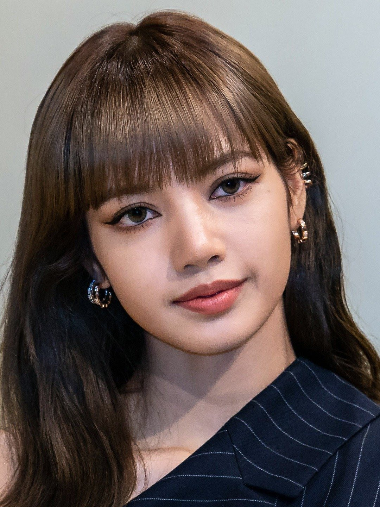
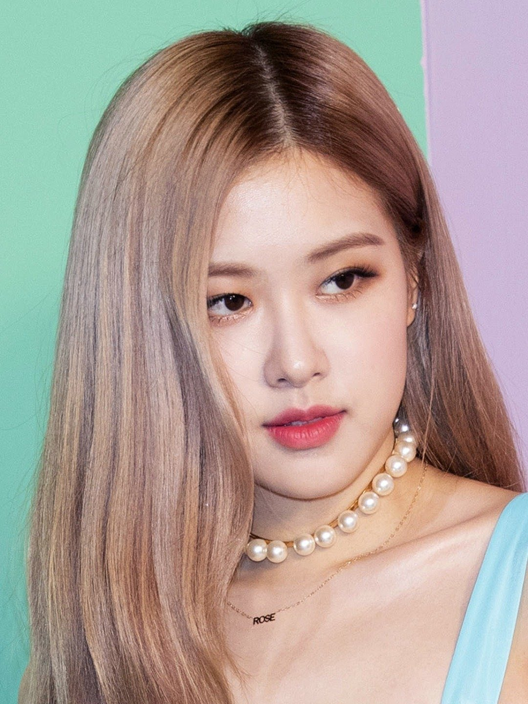

Members
Jennie Kim (Korean: 김제니)
- Born: January 16, 1996
- Genres: K-popdance-pophip hop
- Occupation(s): Singer . rapper
- Instruments: Lead Vocalist

Lalisa Manoba
- Born: 27 March 1997
- Genres: K-popdance-pophip hop
- Occupation(s): Singer . rapperr
- Instruments: Main dancer

Kim Ji-soo
- Born: 3 January 1995
- Genres: K-popdance-pophip hop
- Occupation(s): Singer . apper
- Instruments: Lead Vocalist

Roseanne Park
- Born: 11 February 1997
- Genres: K-popdance-pophip hop
- Occupation(s): Singer . apper
- Instruments: Lead dancer